이 페이지는 쿠팡 파트너스 활동의 일환으로, 이에 따른 일정액의 수수료를 제공받습니다.
이건 사 두면 매일 편해요
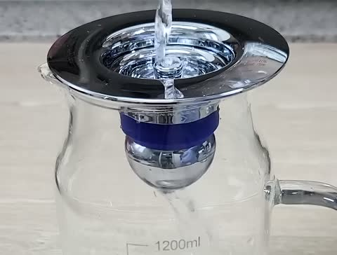
초파리엔 냄새 트랩
싱크대·욕실 구멍에 끼우기만 하면 초파리가 못 올라와요.
에스엠지 냄새제로 트랩 50mm
13,400원 (11월 25일 기준)
쿠팡에서 가격 보기 ›영상 0:18에서 보기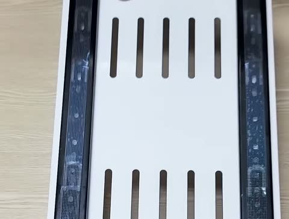
양념통 레일
양념통을 앞으로 당겨 꺼내요. 안쪽 거 찾느라 다 꺼낼 일이 없어요.
홈디메르 슬라이딩 레일 수납함
17,890원 (11월 25일 기준)
쿠팡에서 가격 보기 ›영상 2:01에서 보기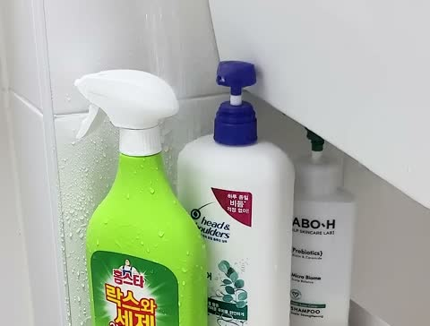
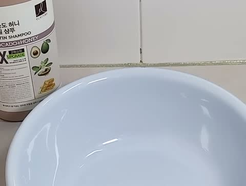
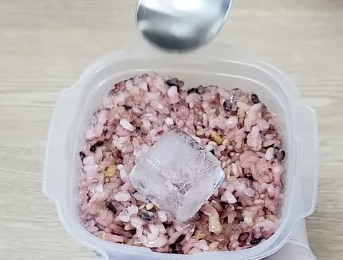
냉동밥 얼음 한 조각
밥을 한 공기씩 얼려 두고, 얼음 한 조각 올려 3분 데우면 돼요.
에코센스 냉동밥 보관용기 450ml 4개
20,900원 (11월 25일 기준)
쿠팡에서 가격 보기 ›영상 1:43에서 보기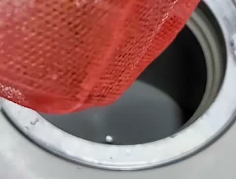
하나 사면 꿀팁 여러 개
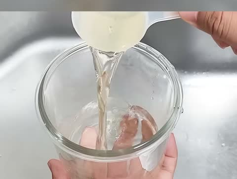
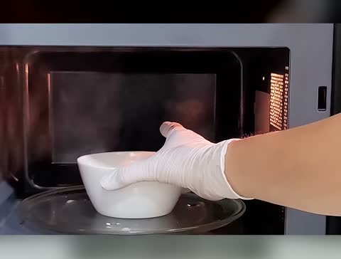
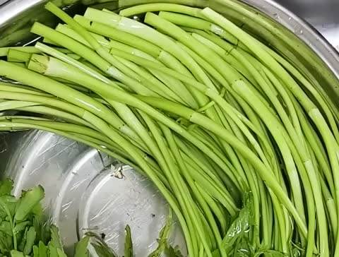
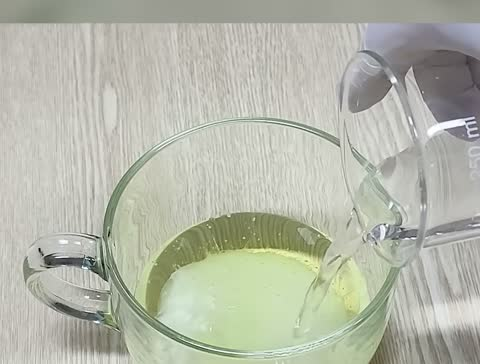
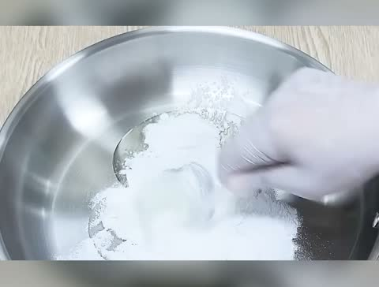
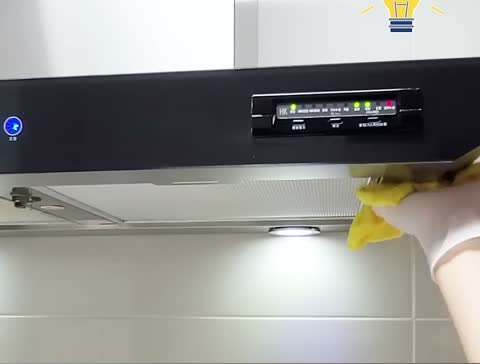
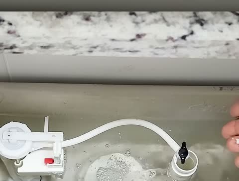
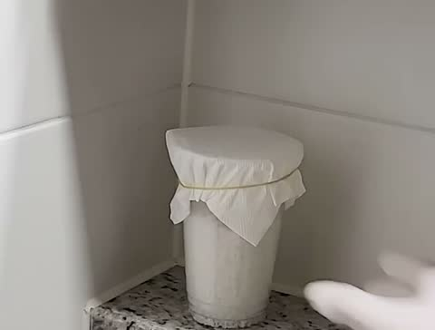
나머지 준비물
주방 청소
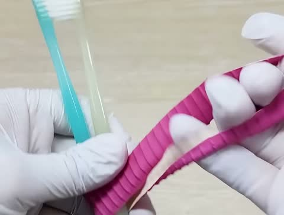
거름망은 칫솔 두 개살림백서 이중 미세모 칫솔 32개입19,890원
보기 ›
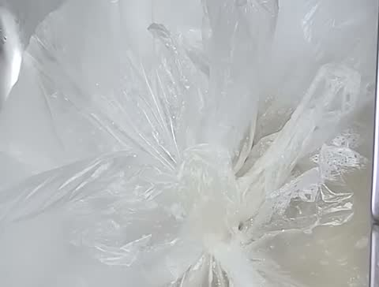
후드 필터 5분크로바 골드퐁 주방세제 13L10,750원
보기 ›
행주 3분 살균송월타월 한국손26 행주 10개5,000원
보기 ›
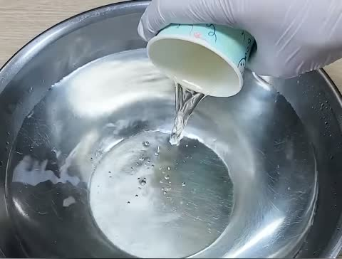
고무장갑 식초 물마미손 고무장갑 XL 10개22,800원
보기 ›
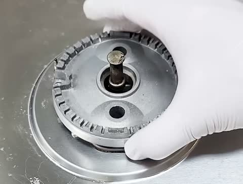
가스 불 안 붙을 때벡셀 알카라인 D형 건전지 2개입2,650원
보기 ›
요리·손질
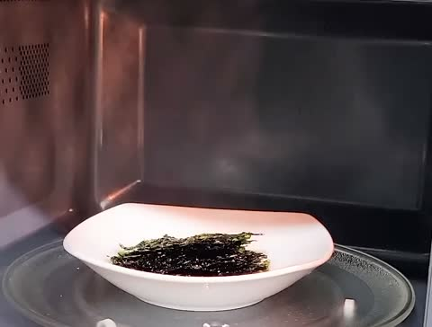
눅눅한 김 10초동원 양반 들기름김 20g 10봉16,900원
보기 ›
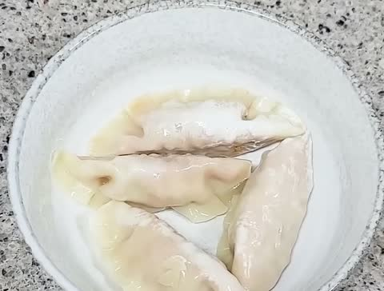
촉촉 만두비비고 왕교자 1.05kg9,800원
보기 ›
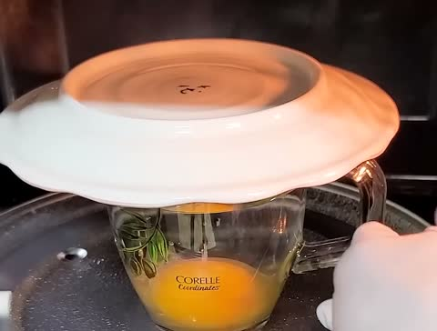
전자레인지 수란MAME 전자레인지 에그메이커 2개6,240원
보기 ›
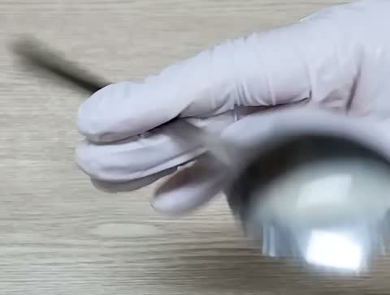
참기름 뚜껑오뚜기 고소한 참기름 320ml8,810원
보기 ›
냉장·보관
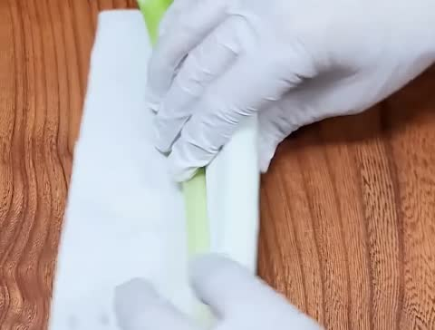
대파는 페트병에코멧 천연펄프 키친타월 150매 8롤5,990원
보기 ›
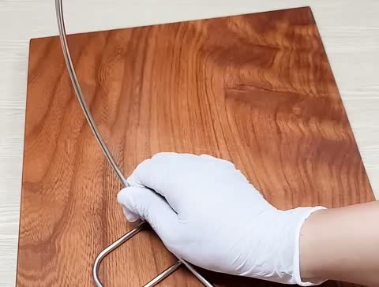
바나나 랩엠에스리빙 바나나걸이 2개4,040원
보기 ›
깐 마늘 소금글라스락 정사각 밀폐용기 850ml 2개7,700원
보기 ›
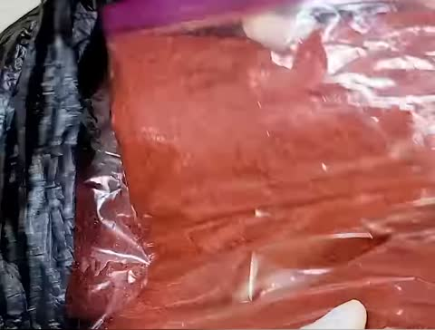
고춧가루 냉동국산 태양초 고춧가루 1kg27,560원
보기 ›
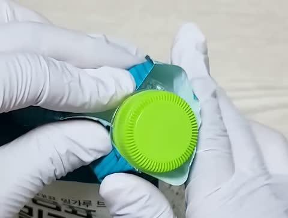
봉지에 페트병 입구온유 봉지 캡 밀봉 마개 4개7,630원
보기 ›
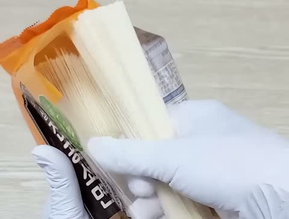
소면 봉지 고무줄샘표 진공소면 900g 2개6,360원
보기 ›
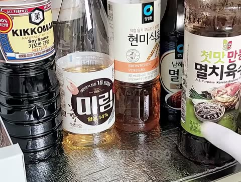
보냉백 재활용코멧 은박 보냉팩 30개7,000원
보기 ›
욕실·생활
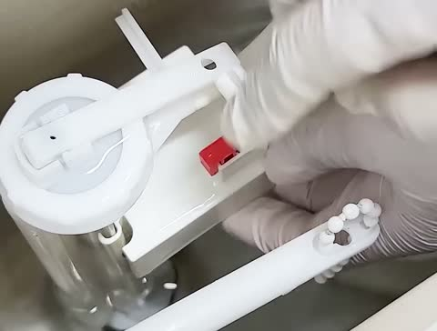
변기 물 약할 때하픽 청크린 변기세정제 2개11,020원
보기 ›
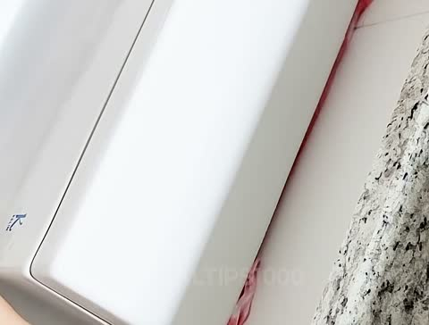
변기 틈 양파망살림백서 구연산 주방세제 4L7,680원
보기 ›
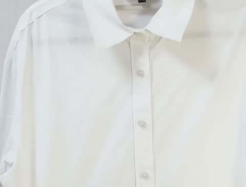
셔츠 구김블라우풍트 2400W 헤어드라이기20,800원
보기 ›
모자 빨래어슬릭 중성 울세제 2.5L 4개11,490원
보기 ›
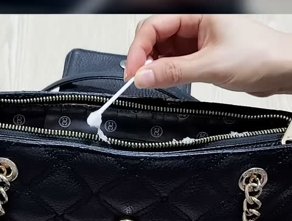
뻑뻑한 지퍼바세린 프로텍팅 젤리 100ml 2개4,250원
보기 ›
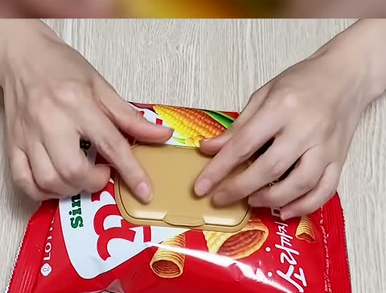
물티슈 뚜껑자바락 탈부착 물티슈캡 3개5,150원
보기 ›
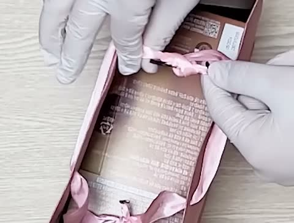
종이가방 끈크라프트 무지 쇼핑백 중 50장12,890원
보기 ›
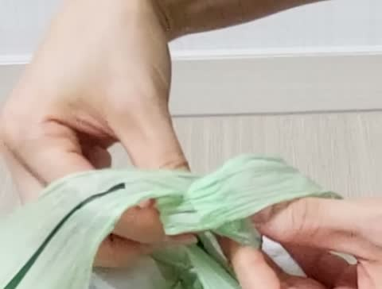
쓰레기봉투 8자국산 대형 쓰레기봉투 50L 100개7,500원
보기 ›
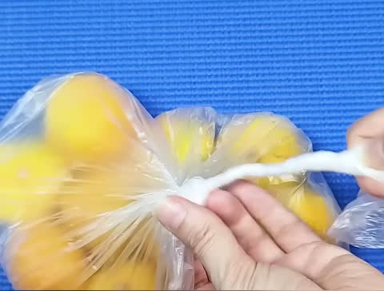
꽉 묶인 비닐에브리홈 두꺼운 롤백 3kg17,500원
보기 ›
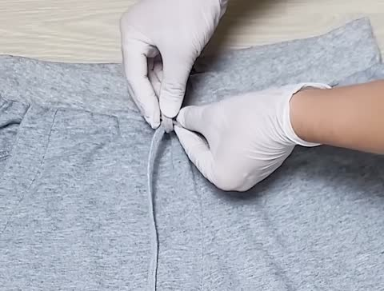
빠진 바지 끈밝은리빙 후드바지 끈 10개5,300원
보기 ›
집에 있는 걸로 바로
계란 신선도계란은 소금물에 넣어 뜨면 상한 것0:51
라면 물 500라면은 물 500, 면은 80% 익으면 건지기1:02
감자 소금 반 스푼감자는 소금 반 스푼 넣고 삶기1:12
초간단 떡국불린 떡국떡에 계란 하나 풀기1:10
파프리카 꼭지파프리카는 꼭지를 눌러 쏙 빼기1:18
설탕 봉투 밀봉남은 설탕 봉투는 불로 살짝 붙여 밀봉1:55
짠 김치엔 무짠 김장김치엔 무를 중간중간1:27
고추장 뜨기고추장은 숟가락 뒤쪽으로 뜨기1:24
⏰ 오늘만 싼 쿠팡 특가하루마다 바뀌는 할인 상품이에요. 사려던 게 있으면 가격부터 보세요.가격은 11월 25일 쿠팡 기준이라 바뀔 수 있어요. 눌러서 지금 가격을 확인하세요.
영상 출처: 진짜꿀팁 RealTips (CC BY 4.0)